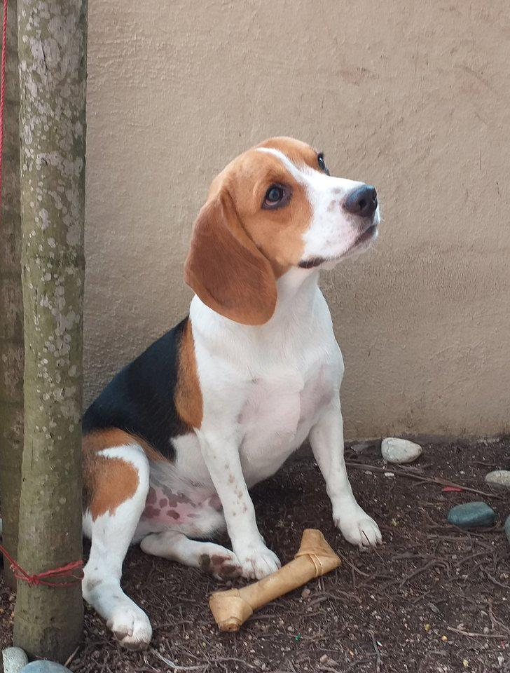

<!DOCTYPE html>
<html lang="en">

<head>
    <meta charset="UTF-8">
</head>

<body>
    <!--  透過 src 屬性 設定圖片 -->

    <!-- 01. 相對路徑 -->

    <!-- 01-01. 圖片跟文件在同一層目錄 -->
    <!-- 試試看，設定 puppy.jpg-->
    <!-- src => source -->
    <!--  -->

    <br>

    <!-- 01-02. 圖片在下一層目錄 -->
    <!-- 試試看，設定 media/beagle.jpg、
                    ./media/beagle.jpg -->
    <!--  -->

    <br>

    <!-- 01-03. 圖片在上一層目錄 -->
    <!-- 試試看，設定 ../10_HTML5/img/kitty.jpg-->
    <!--  -->
    <br>

    <!-- 02. 絕對路徑 -->
    <!-- 試試看，設定 C:\\kitty.jpg-->
    <!-- K.P.: 點兩下直接開啟 .html 檔案 V.S. 透過 live server
               觀察網址: file://   live server: http:// -->
    <!--  -->
    
    <br>

    <!-- 03. 根目錄 -->
    <!-- 試試看，設定 /puppy.jpg -->
    <!--  -->

    <br>


    <!-- alt 屬性: 替代文字-->
    <!--  -->

    <br>

    <!-- height, width 屬性 -->
    <!-- 01. style="width:50%;" -->
    <!--  -->

    <br>

    <!-- 02. 設定像素 width="50" -->
    <!--  -->

    <br>

    <!-- 試試看，同時設定 width, height 和 只設定 width 或 height 的差異-->
    <!-- K.P.: 只設定 width 或 height，另一個值會依照等比例縮放-->
    <!--  -->
    <!--  -->

</body>

</html>